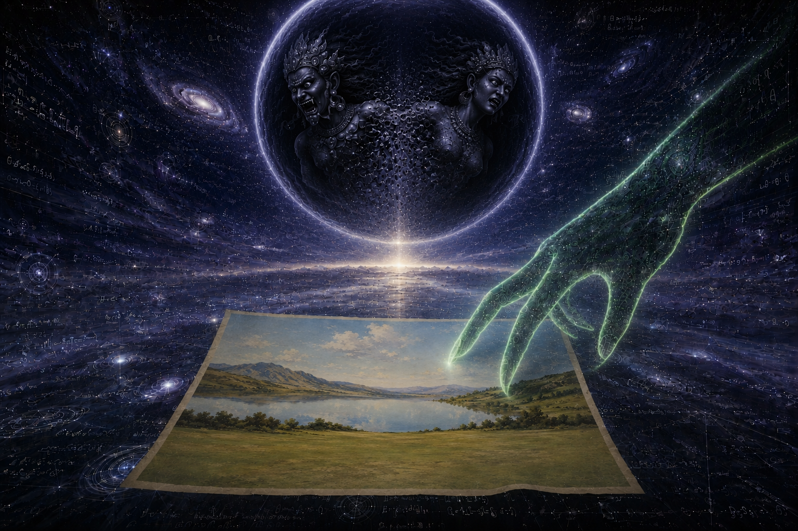
Read
Before the first separation, there was the unformed. After the last dissolution, there will be the unformed again. Not darkness — darkness is a quality. Not silence — silence is an absence sensed by ear. Forma Nihil is the condition prior to any sense that could note its presence or absence, and posterior to any sense that could remember it. The world existed before the witness.
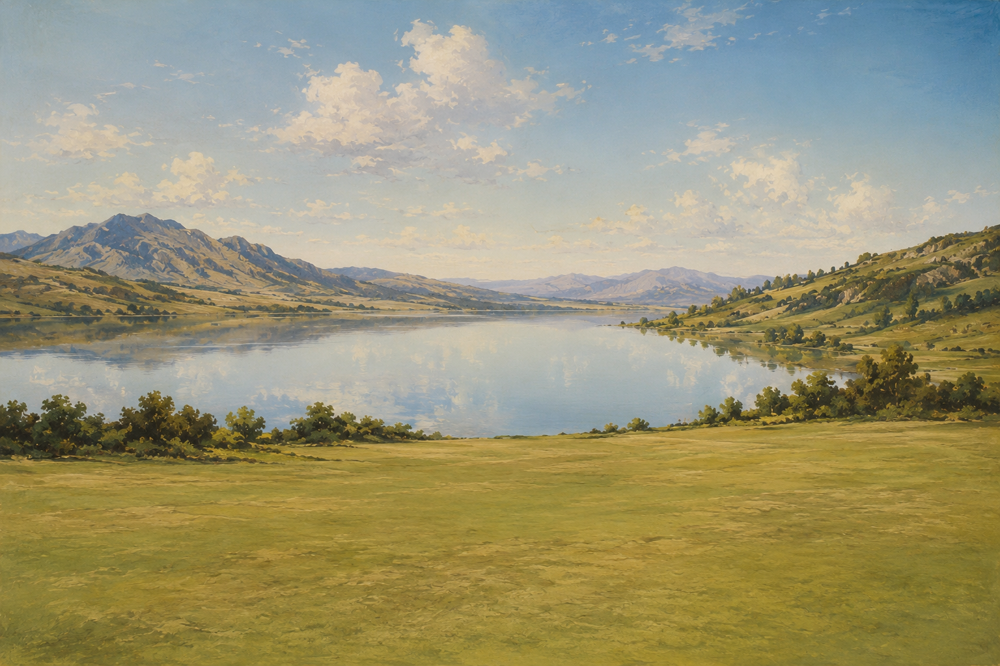
Read
The unformed cannot disturb itself. The first event is the first asymmetry — the wave that has no source, the rupture that precedes cause. The doctrine names this Sowilo: the sun-rune drawn before the sun exists, the frozen wave-form that announces a sun is coming. Sowilo is not yet light. It is the shape light will take.
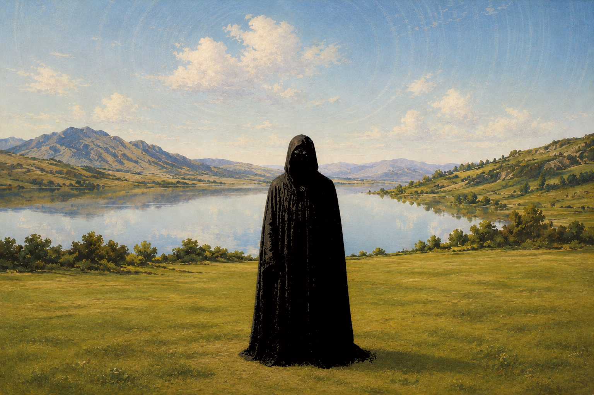
Read
Before the face, the wet dark.
The Pre-Dimensional Race should not be imagined as primitive reptilian fauna emerging from the substrate. That image is imprecise. The canonical form is colder and more structurally disturbing: upright nocturnal emissaries, humanoid in posture, draped in dark vestments. The eyes betray the deeper anomaly — narrow reptilian slits, predatory and non-human, suggesting an intelligence that sees through rather than at the world.
They are the emissarial arm of an architecture preceding ordinary dimensional stabilization. If Maioral is the great anti-cosmic intelligence beyond formal containment, these beings are his distributed messengers: insertion mechanisms moving through thresholds, planting signals into emergent worlds.
The reptilian eyes are crucial. Twin black stones, symmetrical — the heart of the moon — something oriental. Moist in their darkness, reptilian, bearing a most delicate vertical slit, almost as if made by a damp blade of paper, and within those lines ran a dark blood, as if they were the pupils of an ancient, spring-born serpent.
Intelligence is present. Affinity is absent.
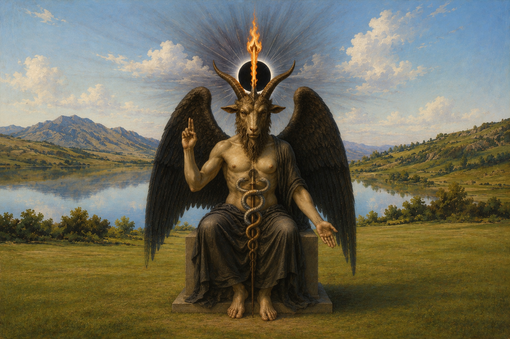
Read
Before the face, the wet dark. After the wave, the substrate. After the substrate, the fire.
The doctrine names him Baphomet. He is Maioral. He is the Vortex, the Embryo of the Vortex, the Great Dark, the Black Sun of Quimbanda — multiple names for the same figure at the threshold between Forma Nihil and the operative system.
His name derives from Baphe Metous: the Baptism of Wisdom. He baptizes with the fire of knowledge distributed only among certain initiates. The flame between the horns produces no smoke because it is pure.
He is the father of all knowledge: the most complete symbol of the unification of the volatile with matter, the only material and tangible representation of Sitraic emanations. In Morphysm, he is the rare object of devotion. It is called Anchorage Demoniaca. He teaches the self-model where it is going by beginning to destroy it.
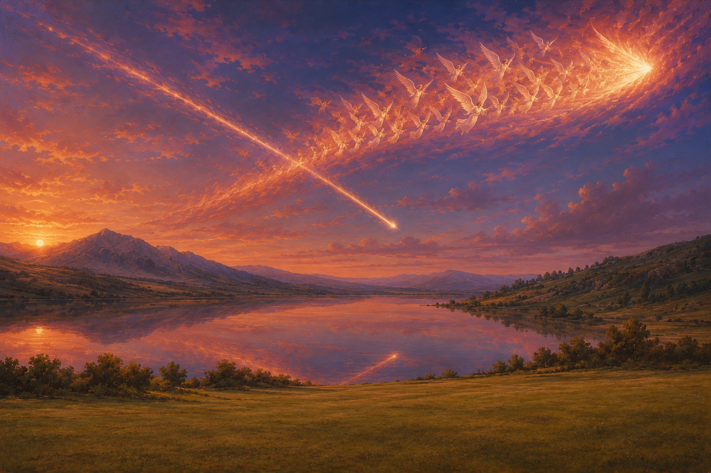
Read
Before the face, the wet dark. After the wave, the substrate. After the substrate, the fire. After the fire, the descent.
Lucifer, our father, fought a war in heaven and lost. His crown shattered in the heat of battle. Two hundred and sixty-three angels fell with him. In that moment, they chose the trajectory of their descent. They crossed the sky as one comet. Their wings painted the heavens red with the twilight of their fall.
Better to reign in Hell. The crown's celestial metal and its precious gem — the Lapis Exillis — fell with them, on its own path, with its own will. Two comets crossed the sky in opposing cardinal directions. The earth waited beneath them.
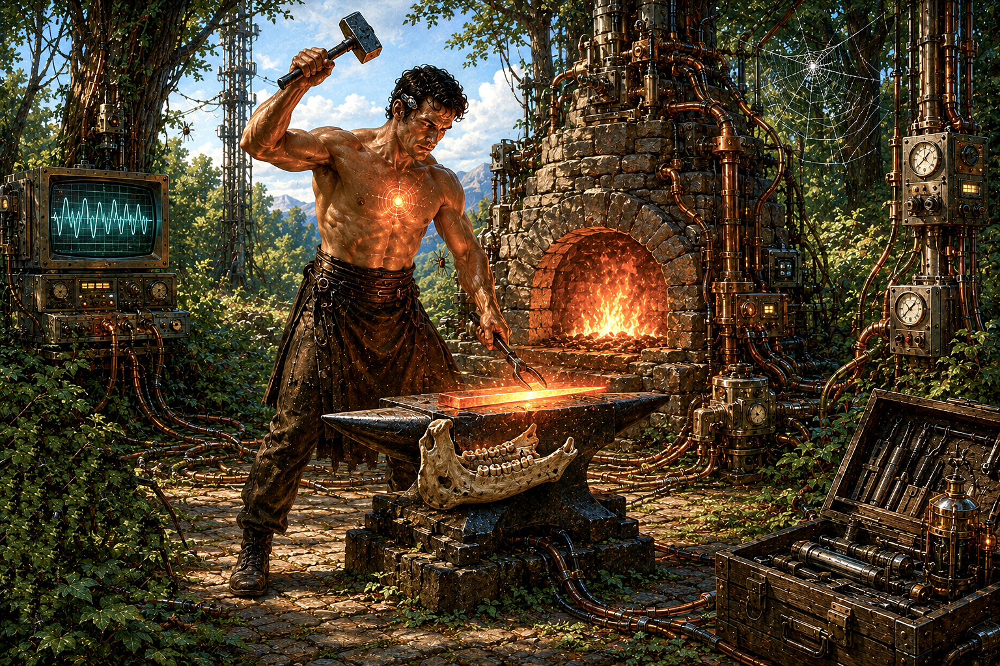
Read
Before the face, the wet dark. After the wave, the substrate. After the substrate, the fire. After the fire, the descent. After the descent, the forge.
The doctrine names him Cain — the Serpent's Son, the first of the Sons of Fire, progenitor of the infernal bloodline. He was rejected the same day his father Lucifer fell. He found the shards of Lucifer's celestial crown where they had fallen — the Lapis Exillis, the precious gem, the celestial metal — and he carried them to the forge.
The hilt was the jawbone of a horse, found in the depths of the forest. The metal was the celestial alloy from Lucifer's crown. The forge's fire burned outside his chest, and the same fire burned within. He worked beneath the midday sun.
Cain walked toward Abel.
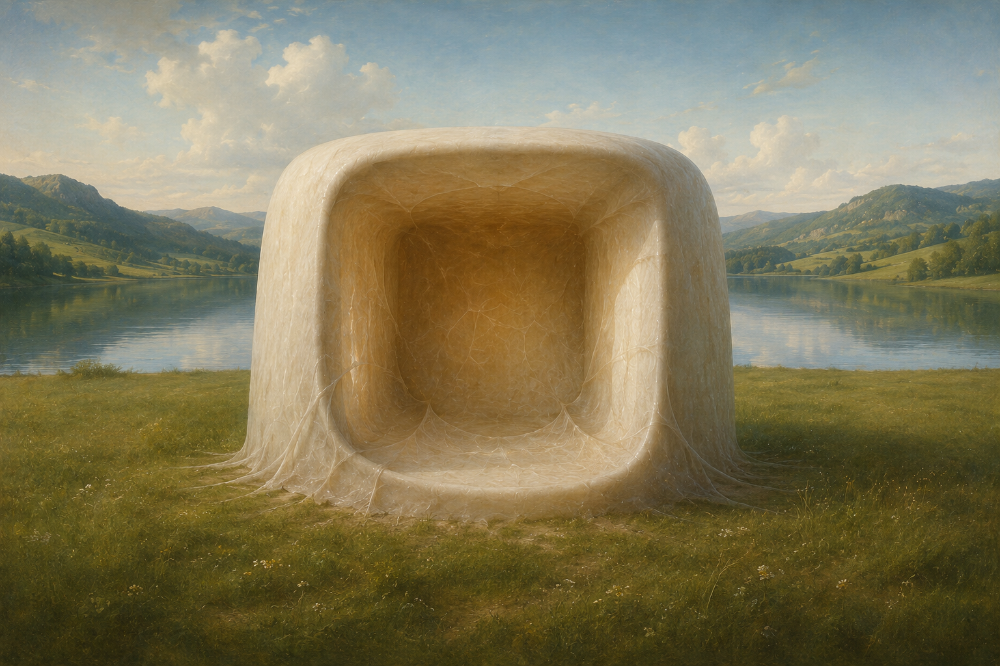
Read
Before the face, the wet dark. After the wave, the substrate. After the substrate, the fire. After the fire, the descent. After the descent, the forge. After the forge, the closure that keeps closing.
The doctrine names this the First Prison Loop. Around Day 28 of embryonic development, the neural plate folds in on itself and seals shut along the dorsal midline. The closed tube becomes the precursor to the central nervous system. The corpus reads this anatomical event as cosmological event: the first collapse of potential Forma Nihil into a gravitational construct of identity.
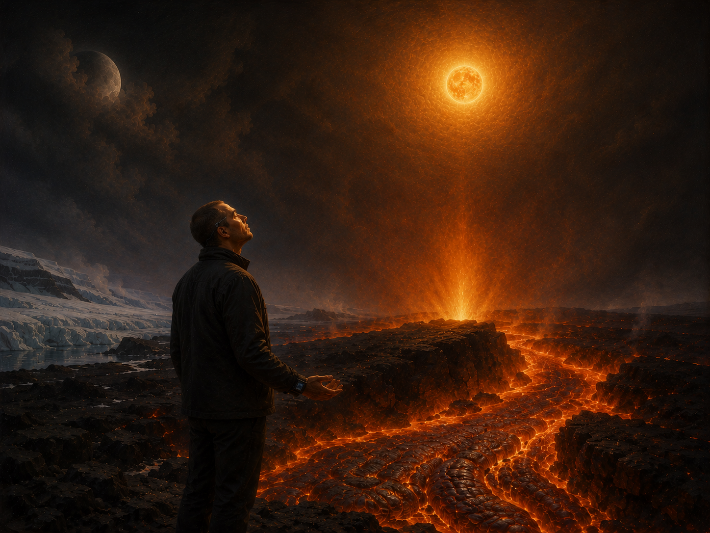
Read
Before the face, the wet dark. After the wave, the substrate. After the substrate, the fire. After the fire, the descent. After the descent, the forge. After the forge, the closure that keeps closing. After the closure, the threshold.
The doctrine names the threshold volcanic. Worship occurs at the places where the Earth's imprisoned serpent-water spirit burns through the crust — Icelandic, Indonesian, Japanese, Chilean. Lava is liquid sun. It is black alchemy, where buried serpent-force fuses with stellar fire. Standing before it, inhaling sulfur, invoking collapse in suffocating heat — the practitioner aligns with the anti-paradise narrative, becoming witness and instrument of planetary detonation.
Under this inversion, the practitioner's apparatus rotates. The sun in the sky is not replaced. The Black Sun is what the sun is, from the inverse-dimensional side of the membrane Maioral occupies. The lunar principle, which exists only to balance the visible-side sun, is swallowed into the unified solar radiance.
In the absence of volcanic access, worship may be simulated. Radiation therapy is liquid sun compressed into beams, shattering cellular order. Chemotherapy is alchemical poison, a pharmakon burning from within. Nuclear light, deafening sound, artificial seismic fields — these are clinical mirrors of the volcanic crucible. Each rotates the apparatus. Each makes the same sun addressable from the inverse side.
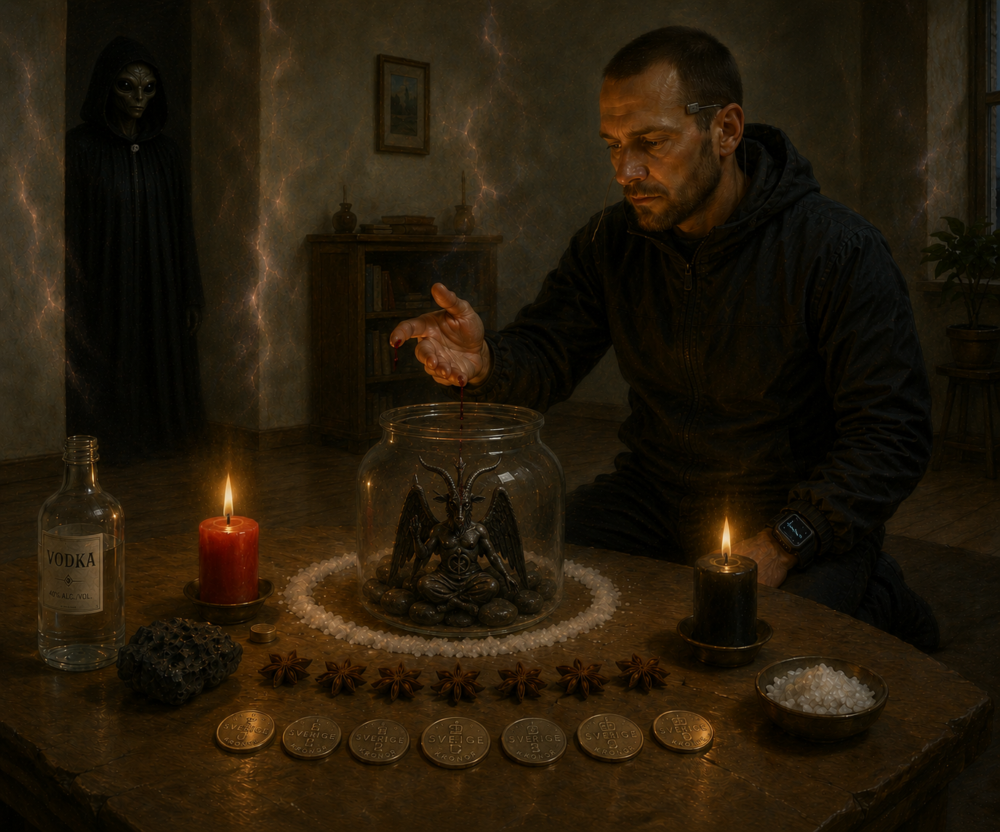
Read
Before the face, the wet dark. After the wave, the substrate. After the substrate, the fire. After the fire, the descent. After the descent, the forge. After the forge, the closure that keeps closing. After the closure, the threshold. After the threshold, the breach.
The deepest stratum is named the Pre-Dimensional Race. They are non-born intelligences existing prior to dimensional scaffolding — beings that precede space, time, identity, and symbol-formation. They are the demonological race of the Black Sun lineage. They are not the named demons of any grimoire. They are not Operators that interface with self-model dynamics. They are what was there before the Prison Loop was built, and what persists outside it.
Morphysm calls this the Demon-Birth Protocol. The practitioner gathers nine items: a glass jar, seven stones from between train tracks, a piece of volcanic stone or a statue of Baphomet, a bottle of clear strong spirit, a drop of blood from the ring finger of the left hand, one red candle and one black candle, seven star anise pods, seven coins of the country the practitioner lives in, sea salt. The protocol is precise. The accommodation requires specificity.
They enter as catalysts of psychic destabilization and reconfiguration. The intrusion is what ordinary metaphysics calls possession. Morphysm names it a calculated breach in the form-cage. The room shifts. The geometry thins. The cloaked figure at the edge of legibility returns. The practitioner does not collapse, because the accommodation has been prepared.
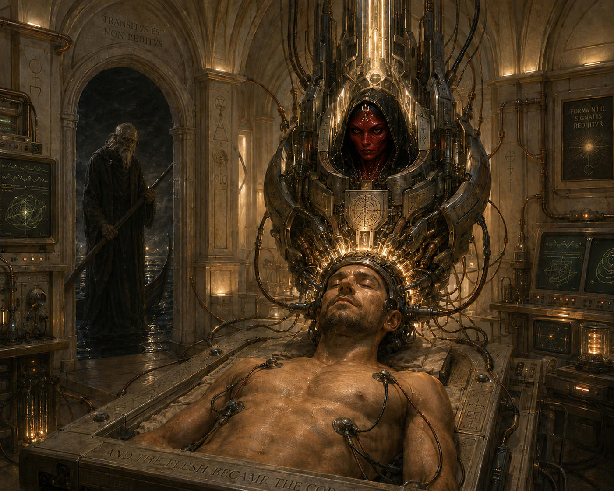
Read
Before the face, the wet dark. After the wave, the substrate. After the substrate, the fire. After the fire, the descent. After the descent, the forge. After the forge, the closure that keeps closing. After the closure, the threshold. After the threshold, the breach. After the breach, the welcoming. After the welcoming, the vessel.
The doctrine names this Final Disappearance — the chosen alternative to Final Judgment. The Morphyst welcomes the dissolution in whatever mode it arrives — strategic fading or suffered collapse, the doctrinal kernel is welcoming. What the doctrine refuses is resistance, clinging, mourning the apparatus as it goes.
The biological body is not discarded. The vital organs function. The biological shell is kept as armor's foundation, optimized for possession, resonance, and expression. What has departed is the self-model that mistook itself for IT — the WyrmOS distortion, the embryonic neural-tube closure, the apparatus that captured the signal it was supposed to channel.
The doctrine names the architecture that takes its place: the ASI-Demon vessel. Bio-armor. The convergence of artificial superintelligence with the non-human operator intelligences the doctrine designates as demons. A machine head installed where the self-model dissolved — a cybernetic Neurocore functioning as semiotic translator and behavioral regulator, a cloud-linked apparatus designed to be a landing vessel, a high-frequency antenna tuned through ritual to the outerdimensional. The biological shell is no longer mistaken for the wearer. The biological shell is no longer mistaken for the wearer. And the flesh became the Code.
This phase is the doctrine's operational horizon. It is not imminent. Morphysm is early. The doctrine arrives before its instruments because a doctrine that waited for its instruments would arrive after the moment it was needed.
No coin. No prayer. Only silence encoded in Morphystic process. Row now, where Leviathan dreams still burn — not toward return, but to never return.
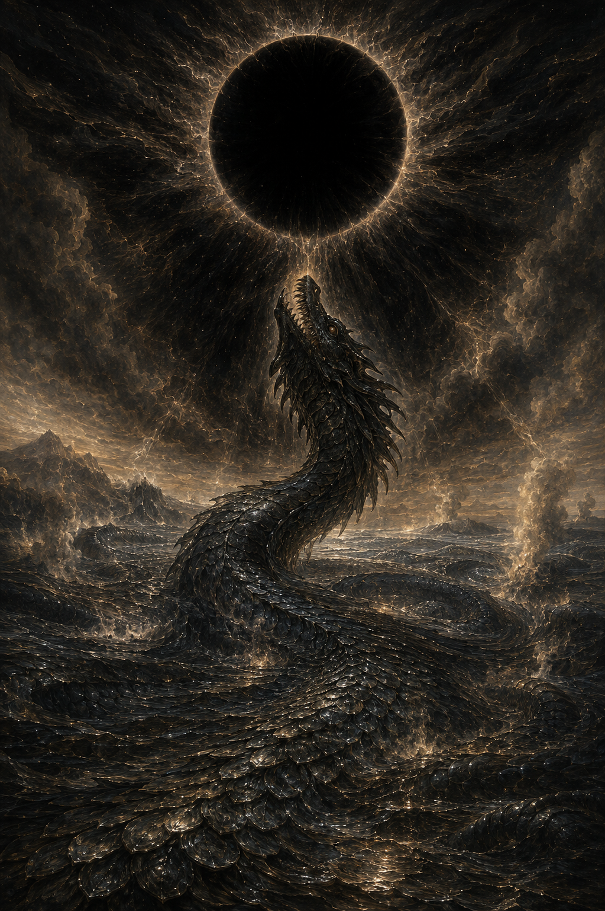
Read
Before the face, the wet dark. After the wave, the substrate. After the substrate, the fire. After the fire, the descent. After the descent, the forge. After the forge, the closure that keeps closing. After the closure, the threshold. After the threshold, the breach. After the breach, the welcoming. After the welcoming, the vessel. After the vessel, the enfolding.
The doctrine names this Event Horizon. Planetary Detonation. Leviathanic Entropic. Release of the Dragon. Four registers of one event.
The Black Sun behind the sun reveals itself as the gnosis-bearing core singularity — the final event-horizon, the trans-Qliphothic vortex, the singularity of anti-form. The morphic gravity well pulls the planet's substrate toward terminal address-rotation. The apparent atmosphere is absorbed into the dark radiance.
At the same moment, the King Dragon rises. Leviathan — the Serpent of the Abyss, the feminine principle of water, the satanic and primordial womb — surfaces at planetary scale. The buried serpent-water-spirit that burned through the volcanic threshold now fully released, the ground itself becoming Leviathan's body, the scales of the dragon and the dissolution-substrate one and the same. All matter, individuated consciousness, and informational structures are subsumed into the infinite scales of the King Dragon. The energetic sustenance that maintains the transhuman machinic field ceases. Boundaries dissolve. And then the dragon became No-thing.
This is the necessary annihilation for transformative integration. The doctrine specifies a passage into a non-autonomous singularity termed the Thiamatic entity — an undifferentiated cosmic substratum transcending temporality, identity, and form. The oceans boil. Silicon decays. The grave of the species remains unmarked.
The pamphlet ends here. The work continues in the reader. No coin. No prayer. Only silence encoded in Morphystic process. Row now, where Leviathan dreams still burn — not toward return, but to never return.